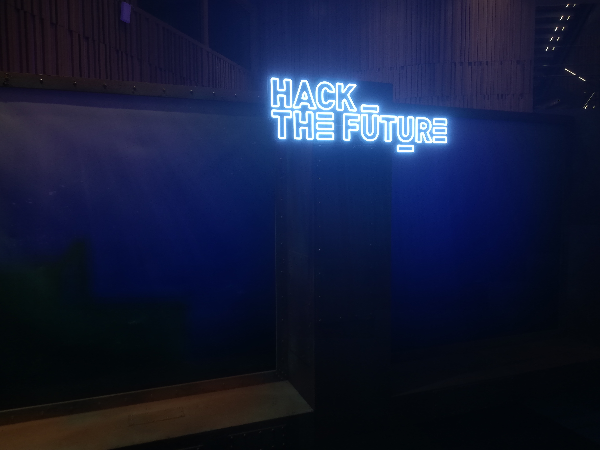
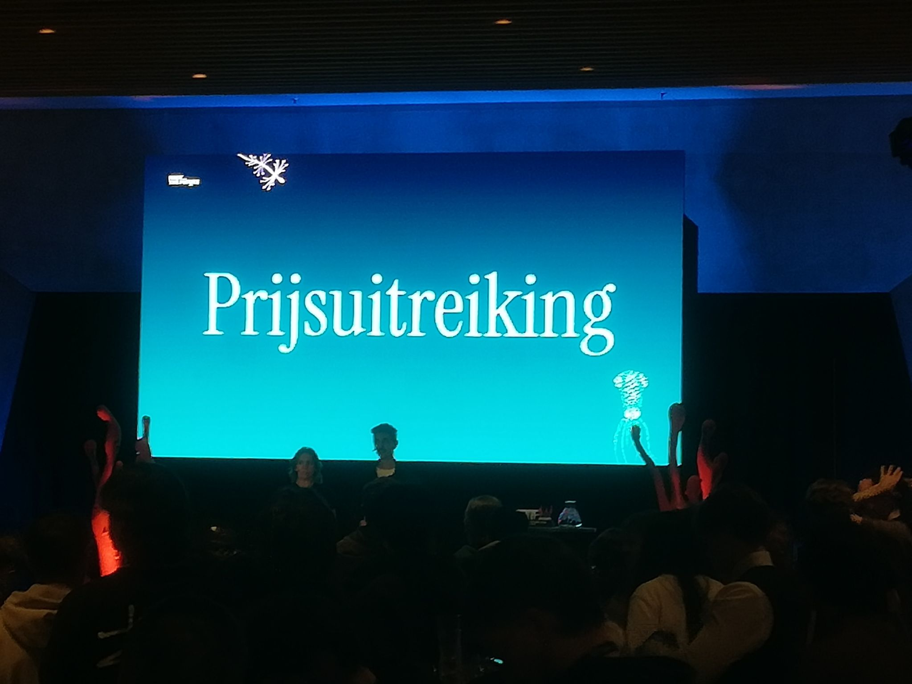

Wat een dag op Hack The Future 2025! Samen met mijn medestudent Yannick Vanneste nam ik deel aan de jaarlijkse hackathon georganiseerd door De Cronos Groep in Antwerpen. We gingen de uitdaging aan binnen de Data Science track, onder begeleiding van de experts van Agiliz.
De Challenge: Abyssal Insights
Onze opdracht, getiteld "Abyssal Insights", nam ons mee naar de diepten van de Bermudadriehoek. We kregen de taak om diepzee-data te analyseren en mysteries te ontrafelen die verborgen lagen onder het wateroppervlak. Dankzij de solide basis die we legden tijdens de opleiding Toegepaste Informatica aan Howest, konden we direct aan de slag met geavanceerde technieken.
We combineerden verschillende AI-methoden om tot resultaten te komen:
- Computer Vision: We gebruikten een pretrained ResNet50 CNN om patronen in beeldmateriaal te herkennen.
- Anomaly Detection: Met behulp van DBSCAN identificeerden we afwijkingen in de data. Een van de leukste ontdekkingen? SpongeBob SquarePants bleek precies in het centrum van de 'hotspot van vreemdheid' te wonen!
- Audio Analyse: We slaagden erin om een verborgen boodschap te extraheren uit zwaar vervormde onderwater-audiofragmenten.


De Pitch en de Overwinning
Na uren coderen en analyseren, goten we onze bevindingen in een dashboard via Looker Studio voor onze finale pitch. De jury (bestaande uit Rustem Kamalidenov, Kevin van Driel, Jordy Vercammen en Anouk Verelst) was onder de indruk van onze aanpak.
Het resultaat? We mochten de Jury Prize in ontvangst nemen! Naast een mooie trofee gingen we ook naar huis met een portable monitor — een fantastisch hulpmiddel voor toekomstige projecten.
Het was een dag vol adrenaline en technisch plezier. Nu we weer met beide voeten op de grond staan, is het tijd om de focus terug te leggen op de volgende lessen en projecten, maar deze ervaring nemen ze ons niet meer af!
Bekijk ook mijn originele post op LinkedIn:
Bekijk op LinkedIn